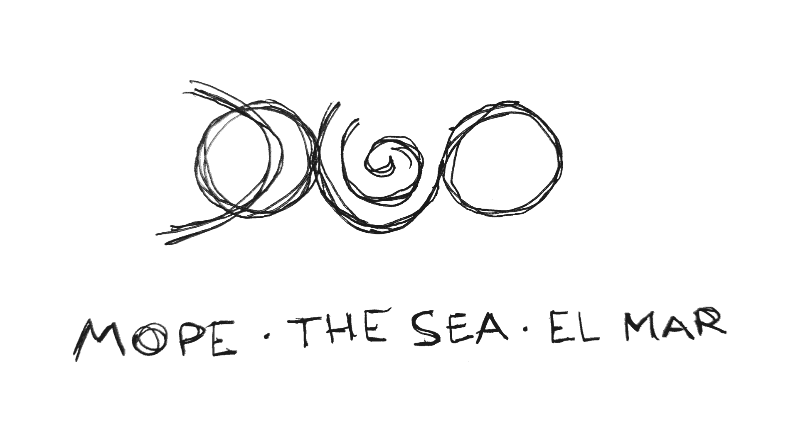

DOLGO - Море / The Sea / El Mar
RU #
Только у меня ощущение, что жизнь делится на этапы, как на отдельные уровни в игре?
На одном из прошлых уровней я активно занимался музыкой. Играл на гитаре и других инструментах, пел, сочинял музыку, и люди даже платили деньги за мои услуги аранжировки, записи, сведения и мастеринга. И я был классическим примером сапожника без сапог: я записал очень много для других людей, но собственную музыку всегда обделял вниманием.
Разумеется, кое-чего выпустил. Но были у меня песни, которые в силу разных причин так и не были представлены широкой публике. Я пробовал, честно! Но каждый раз случалась какая-то "магия": то другие музыканты подводили, то я сам задирал планку, которую в рутине жизни не получалось достичь, то происходили какие-то события, менявшие фокус внимания.
Но вот я оказался в Священной Долине, возле Куско в Перу. И у меня появилось ощущение, что пора. Здесь я смог проявляться так, как не мог проявляться в других местах. Здесь у меня появилось много друзей и знакомых, от которых я чувствую поддержку в том, что делаю. И среди них полно классных музыкантов, которые разделяют взгляды, и с которыми захотелось попробовать сделать то, что не получалось раньше.
И вот первая песня готова! Причём не просто песня, а ещё и видео!
Первая репетиция была 17 мая, а 13 июня мы уже записывались. И 19-21 июня уже поехали на легендарное озеро Титикака снимать видео на солнцестояние! После этого был долгий процесс сведения и мастеринга музыки и монтажа видео. Сегодня 14 августа, так что процесс занял 3 месяца.
Не знаю долго это или нет для одной песни, но как есть. Думаю, что немного, учитывая, что песня была написана примерно в 2005 году и ждала этого момента 21 год.
С тех пор поменялось многое. Я живу, работаю и творю под Linux, и в процессе работы над песней мне пришлось осваивать Ardour для музыки и KdenLive для видео. Да, я знаю что под Linux работают REAPER и Davinchi Resolve, но мне важно было использовать именно открытое и свободное ПО. И ещё я не использовал ИИ ни на одном этапе работы.
Сегодня я нажал кнопку "опубликовать" на всех платформах, так что для меня официальный релиз сегодня, 14 августа 2026. Но на некоторых платформах модерация может занять до 3 недель. А ещё мой дистрибьютор, которого я выбрал именно за возможность опубликоваться на Яндекс Музыке, уже после подготовки этого релиза последовал санкциям против России и удалил эту возможность 🤪.
Так что мне потребуется дополнительное время, чтобы музыка появилась на Яндекс Музыке. Это именно тот тип магии, которая всегда препятствовала. Да, в этот раз такой "магии" тоже было полно, но благодаря поддержке в этот раз всё получилось. Спасибо, я очень это ценю!
Паша Долго - музыка, текст, гитара, вокал, продакшен, актёр
Птеродарья - флейта, вокал, фисгармонь, калимба, перкуссия, актёр
Ольга Сендерова @olgasenderova - вокал, перкуссия, актёр
Марьяна Печенюк @mariana.pecheniuk - камера
Полина Чарина @politigris - камера, актёр
Message From Stars @messagefromstars_ - костюмы
EN #
Is it just me or life feels like split into stages, like levels in a game?
On one of earlier level I was actively into music. Played guitar and other instruments, sang, authored music and songs and some people even were willing to pay me money for arrangements, recording, mixing and mastering. And I was a classical example of shoemaker's child. I made a lot of music for other people, but my own never got enough attention.
Of course, I made some. But I had songs that never saw light due to various reasons. I tried, I swear! But every time some kind of "magic" happened: other musicians let me down, I put a threshold too high and was unable to reach it tied up by routine or something just happened and changed the focus.
But here I am at the Sacred Valley next to Cusco, Peru. And I have a feeling it is time. Here I could manifest myself in ways I couldn't before. Here I met new friends that support me greatly in what I do. And there are a lot of great musicians among them, who share the vision and feel like a good fit to achieve what I failed to achieve previously.
And the first song is ready. And not just a song, but also a video!
First rehearsal was on May 17th, and on June 13th we were recording already. And on June 19-21 we went to the legendary Titicaca lake to film the video on the solstice! A long boring process followed to mix and master music and edit the video. Today is August 14th, so the process took 3 months.
I don't know if it is long or not for a single song, but it is what it is. I think it's OK considering the song was written around 2005 and waited for 21 year.
A lot has changed since. I live, work and create in Linux now. And during the work on the song I had to learn Ardour for music and KdenLive for video. Yeah I know Linux supports REAPER and Davinchi Resolve, but for me it was important to use libre and open source software. And I didn't use AI on any stage of the making.
Today I've pushed the Publish button on all platforms, so for me the official release is today, August 14th, 2026. Thou on some platforms the moderation can take up to 3 weeks.
Pasha Dolgo - music, lyrics, guitars, vocals, production, actor
Pterodarya - flute, vocals, harmonium, kalimba, percussion, actor
Olga Senderova @olgasenderova - vocals, percussion, actor
Mariana Pecheniuk @mariana.pecheniuk - camera
Polina Charina @politigris - camera, actor
Message From Stars @messagefromstars_ - costumes
ES #
¿Solo yo quien tiene la sensación de que la vida se divide en etapas, como si fueran niveles distintos en un juego?
En una de mis niveles anteriores, me dedicaba activamente a la música. Tocaba la guitarra y otros instrumentos, cantaba, componía música, e incluso había gente que me pagaba por mis servicios de arreglos, grabación, mezcla y masterización. Y yo era el clásico ejemplo del zapatero sin zapatos. He creado mucha música para otras personas, pero siempre le he prestado menos atención a mi propia.
Por supuesto, sí que lancé algo. Pero tenía canciones que, por diversas razones, nunca llegaron a presentarse ante el público en general. ¡Lo intenté, de verdad! Pero cada vez pasaba algo "mágico": a veces otros músicos me fallaban, otras veces yo mismo me ponía un nivel de exigencia que, en el día a día, no lograba alcanzar, y otras veces sucedían cosas que desviaban mi atención.
Pero aquí estoy, en el Valle Sagrado, cerca de Cusco, en Perú. Y tuve la sensación de que ya era hora. Aquí pude expresarme de una manera que no había podido hacerlo en otros lugares. Aquí hice muchos amigos y conocidos, de quienes siento apoyo en lo que hago. Y entre ellos hay muchos músicos geniales que comparten mis puntos de vista y con quienes me dieron ganas de intentar hacer lo que antes no me había salido bien.
Y ya está lista la primera canción. ¡Y no es solo una canción, también un video!
El primer ensayo fue el 17 de mayo, y el 13 de junio ya estábamos grabando. ¡Y del 19 al 21 de junio nos fuimos al legendario lago Titicaca a grabar el video durante el solsticio! Después de eso, vino un largo proceso de mezcla y masterización de la música, así como de edición del video. Hoy es 14 de agosto, así que el proceso duró 3 meses.
No sé si es mucho tiempo para una sola canción, pero así son las cosas. Creo que es poco, considerando que la canción se compuso más o menos en 2005 y ha estado esperando este momento durante 21 años.
Desde entonces han cambiado muchas cosas. Vivo, trabajo y creo en Linux, y mientras trabajaba en la canción tuve que aprender a usar Ardour para la música y KdenLive para el video. Sí, sé que REAPER y DaVinci Resolve funcionan en Linux, pero para mí era importante usar precisamente software libre y de código abierto. Además, no utilicé inteligencia artificial en ninguna etapa del proceso.
Hoy presioné el botón «publicar» en todas las plataformas, así que para mí el lanzamiento oficial es hoy, 14 de agosto de 2026. Sin embargo, en algunas plataformas la moderación puede tardar hasta 3 semanas.
Pasha Dolgo - música, letra, guitarra, voz, producción, actor
Pterodarya - flauta, voz, acordeón, kalimba, percusión, actor
Olga Senderova @olgasenderova - voz, percusión, actor
Mariana Pecheniuk @mariana.pecheniuk - cámara
Polina Charina @politigris - cámara, actor
Message From Stars @messagefromstars_ - trajes
DOLGO - Море / The Sea / El Mar #
[RU] Ссылки на Spotify, Apple Music, SoundCloud, Deezer, Qobuz и другие стриминговые платформы появятся как только песня пройдёт модерацию на платформах.
[EN] Links to Spotify, Apple Music, SoundCloud, Deezer, Qobuz and other streaming platforms will appear once song passes moderation there.
[ES] Los enlaces a Spotify, Apple Music, SoundCloud, Deezer, Qobuz y otras plataformas de streaming aparecerán tan pronto como la canción pase la moderación en dichas plataformas.